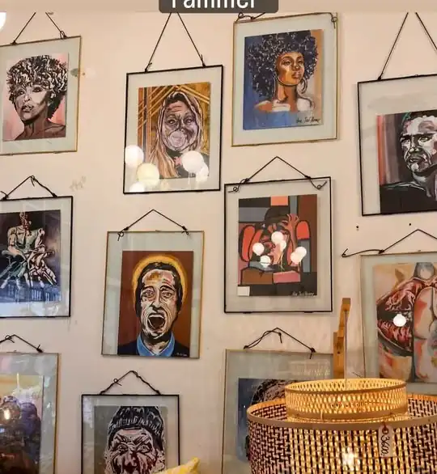
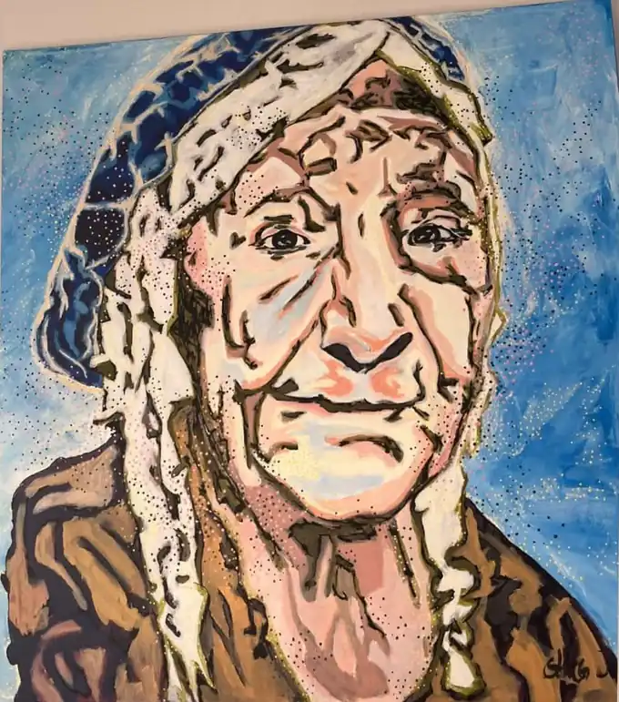
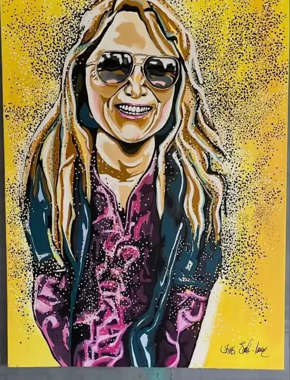
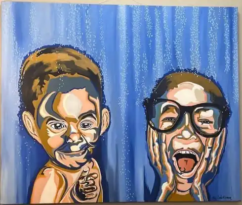
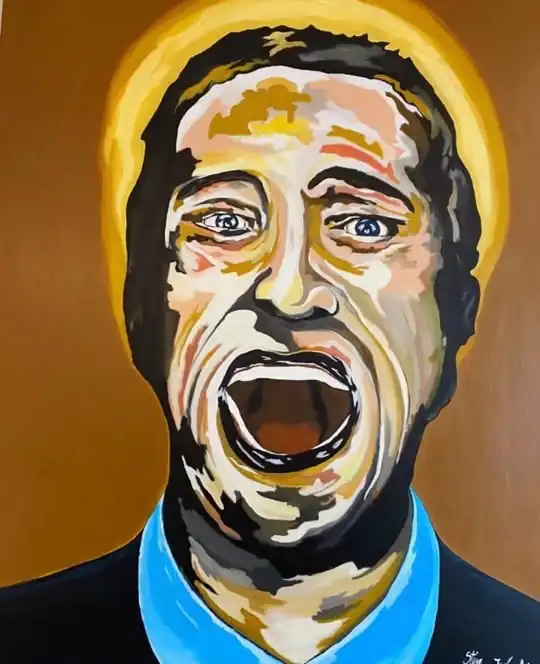

Stine Juul-Normann

Maleri · Figurativt maleri i akryl · Brønshøj
Jeg er autodidakt kunstmaler og har malet i omkring syv år. Jeg begyndte at male, efter jeg mistede mit venstre ben for 12 år siden, og opdagede, at maleriet var min smerteterapi. Derfor fortæller mine billeder ofte en historie og bærer på et budskab – men et skjult et. Jeg maler figurativt i akryl. Til daglig er jeg indretningsstylist og blomsterdekoratør i min butik Prikken over i'et på Frederikssundsvej. Der går lidt tid mellem nye værker, men jeg er altid i gang.
Kontakt kunstneren
Værker

MaleriVintageAkryl på lærred4.800 kr.Tryk i ramme599 kr.
MaleriTrue colorsAkryl på lærred4.200 kr.Tryk i ramme599 kr.
MaleriFresh!Akryl på lærred7.800 kr.Tryk i ramme599 kr.
MaleriThe BelieverAkryl på lærred9.800 kr.Tryk i ramme599 kr.
Kunst til under 600 kr.
Alle Stines værker findes som tryk i 25 eksemplarer i håndlavede rammer – 599 kr. Se dem i Prikken over i'et på Frederikssundsvej 169 eller på webshoppen.
Se tryk på webshoppen